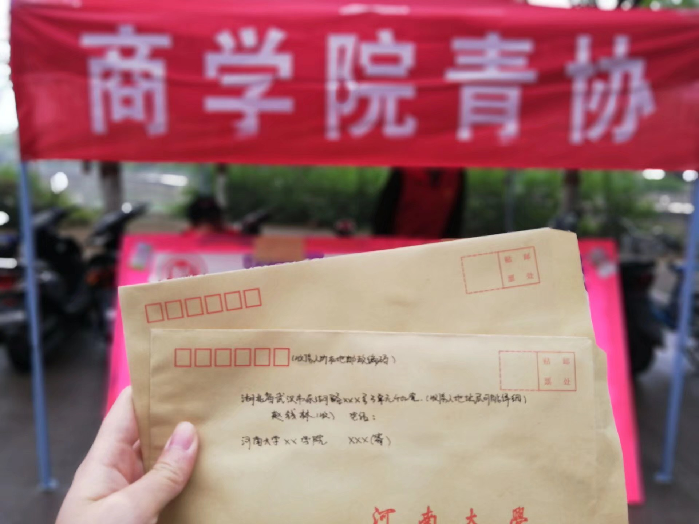

母亲节寄信活动
河南大学商学院青协母亲节为河大学子寄信

敬重母亲，弘扬母爱的母亲节,在中国已成为一个约定俗成的节日，每年五月第二个星期日的母亲节已经成为一个公众必过的节日。国人终于可以在这一天里，大大方方地表示对母亲的深厚感情,有的人会大声地说出心中对母亲的爱，有的人在表达对母亲的爱时则会表现的比较羞涩，这时候写信不失为一种好方法。因此，商学院团委青协特举办"我有话对您讲"给母亲的一封信母亲节特别活动。通过活动营造温馨浪漫的母亲节氛围,传播中华民族传统的精髓孝道,浓厚学校感恩母亲、表达子女之爱的氛围。
每年母亲节到来时，所有参与者均可收到小青们提供的贺卡和信纸，大家可带回宿舍自行填写，当贺卡与信纸填写完毕后可交还小青，为确保投信人的隐私性，小青们将当面密封好信纸与贺卡，同时，会告知投信人在必要时可提醒母亲去取这封信,尽量减少青协工作人员已经把信投递出去,却收不到信等类似的情况。活动结束后，我们会随机抽取信件成功到达母亲手中的同学，以他们作为代表,分享他们的的母亲收到信的感受（可附照片）。母亲节当天，在综合楼后我们的摊位上上我们将通粘贴照片或者通过画漫画等形式让为爱搭建沟通的桥梁。